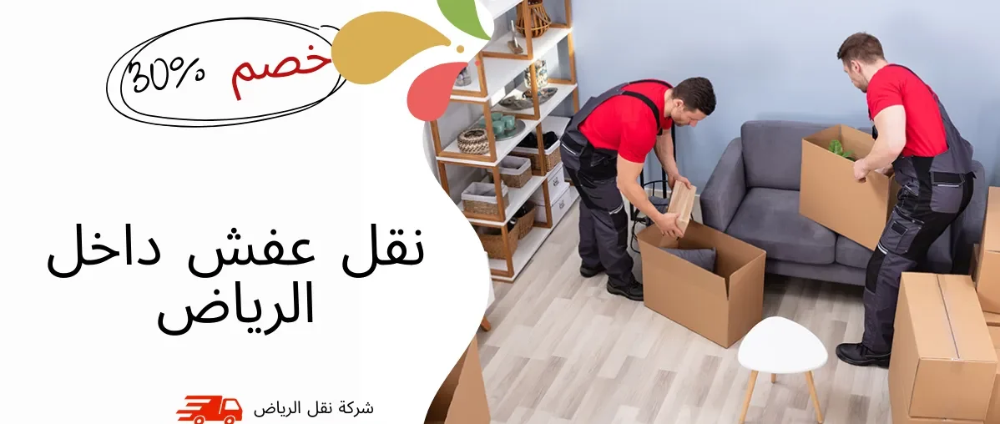

نقل عفش داخل الرياض

تحتاج عملية نقل الأثاث إلى تخطيط دقيق وتنظيم جيد، وخاصة عندما يتعلق الأمر بالانتقال إلى منزل جديد أو تجديد المساحات، ولكن تختلف احتياجات الأفراد والعائلات مما يجعل من الضروري العثور على شركة موثوقة تقدم خدمات متكاملة، وعند التفكير في نقل عفش داخل الرياض يصبح من المهم اختيار شركه نقل الرياض التي تتمتع بالخبرة والكفاءة لتسهيل هذه المهمة، وتوفر الشركات المتخصصة خدمات مثل التعبئة والنقل والتركيب مما يجعل العملية أكثر سلاسة، ولهذا يعتبر الخيار الأنسب هو شركة نقل بالرياض التي تضمن لك تجربة مريحة واحترافية.
ارخص شركة نقل اثاث بالرياض
تعتبر عملية نقل الأثاث من الخدمات الأساسية التي يحتاجها الكثير من سكان الرياض، ولهذا فإن البحث عن أرخص شركة لنقل الأثاث يصبح أمرًا مهمًا، وتبرز شركة نقل بالرياض كخيار ممتاز لمن يسعى لتوفير المال دون التنازل عن جودة الخدمة، ومن بين ميزات شركتنا:
استراتيجية تسعير مرنة
تعتمد الشركة على تقديم أسعار تنافسية تتناسب مع جميع فئات العملاء مما يجعل خدماتها في متناول الجميع.
خدمات إضافية مجانية
تقدم الشركة بعض الخدمات المجانية مثل التعبئة الأولية مما يسهل على العملاء عملية النقل ويقلل من التكاليف.
أسطول سيارات متنوعة
تمتلك الشركة أسطولًا من السيارات بمختلف الأحجام، مما يضمن تلبية احتياجات جميع العملاء سواء كان نقل قطع صغيرة أو أثاث كبير.
تقييمات العملاء
تحظى الشركة بتقييمات إيجابية من قبل العملاء مما يعكس مدى رضاهم عن الخدمة وجودتها.
التوصيل السريع
تضمن الشركة توصيل الأثاث في أسرع وقت ممكن مما يوفر الوقت على العملاء ويسهل عليهم الانتقال، وباختيارك شركة نقل بالرياض ستحصل على تجربة نقل عفش داخل الرياض بأسعار تنافسية وخدمة موثوقة.
افضل شركة نقل عفش بالرياض
عندما يتعلق الأمر بالبحث عن أفضل شركة لنقل الأثاث في الرياض تبرز شركة نقل بالرياض كخيار متفوق، حيث تقدم الشركة خدمات شاملة تهدف إلى تلبية احتياجات العملاء بشكل فائق، ومن بين العوامل التي تجعل الشركة الأفضل:
تجهيزات حديثة
تعتمد الشركة على أحدث التقنيات والمعدات في عمليات النقل، مما يضمن السلامة والكفاءة في كل عملية نقل.
فريق عمل مدرب
يتكون الفريق من أفراد مدربين على أعلى مستوى، مما يضمن التعامل مع كل قطعة من الأثاث بحذر واحترافية.
خطة عمل منظمة
تتبع الشركة خطة عمل دقيقة لتنظيم عمليات النقل وتشمل تحديد مواعيد دقيقة لتقليل فترات الانتظار.
التواصل الفعال
توفر الشركة نظامًا فعالًا للتواصل مع العملاء مما يسهل عليهم متابعة حالة النقل والإجابة على استفساراتهم.
استجابة سريعة
تتمتع الشركة بسرعة الاستجابة لاستفسارات العملاء مما يعكس التزامها بتقديم خدمات متميزة، وباختيارك لشركة نقل بالرياض يعني أنك ستحصل على تجربة نقل عفش داخل الرياض تتميز بالجودة والاحترافية.
دينا نقل عفش بالرياض
تعد سيارات الدينا خيارًا ممتازًا لنقل الأثاث خصوصًا عند الحاجة لنقل كميات كبيرة، وتوفر شركة نقل بالرياض هذه الخدمة بشكل احترافي يجعلها الخيار المفضل للعملاء، ومن بين مزايا دينا نقل الأثاث:
سعة تحميل كبيرة
تتميز سيارات الدينا بسعة تحميل كبيرة مما يسمح بنقل كميات كبيرة من الأثاث في رحلة واحدة، مما يوفر الوقت والجهد.
سهولة الوصول
يمكن لهذه السيارات الوصول إلى أماكن ضيقة أو ذات شوارع ضيقة مما يسهل عملية التحميل والتفريغ.
تأمين الأثاث
تقدم الشركة خيارات تأمين لحماية الأثاث أثناء النقل مما يضمن سلامته ويمنح العملاء الثقة.
تنظيم جيد للأثاث
تعتمد الشركة أساليب تنظيم فعالة لضمان عدم تعرض الأثاث لأي ضرر خلال النقل.
أسعار مناسبة
تقدم الشركة أسعارًا تنافسية لخدمات دينا نقل الأثاث مما يجعلها خيارًا متاحًا للجميع، ومن خلال اختيارك لخدمات دينا نقل عفش داخل الرياض يمكنك أن تضمن تجربة نقل منظمة وسلسة.
افضل شركة نقل عفش خارج الرياض
إذا كنت بحاجة إلى نقل أثاثك إلى مناطق خارج الرياض، فإن شركة نقل بالرياض تقدم خدمات متميزة في هذا المجال، وهي تعتبر نقل عفش داخل الرياض خيارًا موثوقًا لنقل الأثاث بين المدن، ومميزات نقل الأثاث خارج الرياض:
خبرة في النقل بين المدن
تمتلك الشركة خبرة واسعة في تنظيم عمليات النقل بين المدن مما يضمن تنفيذ العملية بكفاءة.
تنظيم النقل
تقدم الشركة خططًا تفصيلية تتضمن مواعيد وشروط النقل مما يسهل على العملاء تخطيط الانتقال.
تأمين شامل
توفر خيارات تأمين للأثاث المنقول، مما يمنح العملاء راحة البال أثناء النقل.
خدمات متعددة
تشمل الخدمات المقدمة التعبئة والتغليف والتركيب في الوجهة الجديدة مما يلبي جميع احتياجات العملاء.
أسعار تنافسية للنقل بين المدن
تقدم الشركة أسعارًا مناسبة لجميع الميزانيات مما يجعلها خيارًا مفضلًا لنقل الأثاث بين المدن.
باختيار شركه نقل بالرياض يمكنك أن تطمئن إلى أنك ستحصل على خدمة نقل عفش موثوقة وآمنة إلى خارج الرياض.
نقل عفش بالرياض باكستاني
تعتبر فرق العمل الباكستانية من الخيارات الشائعة في مجال نقل الأثاث، حيث تتمتع بخبرة وكفاءة عالية، وتوفر شركة نقل بالرياض هذه الخدمة بشكل مميز، مما يجعلها الخيار الأمثل للعديد من العملاء، حيث تكون فوائد استخدام فرق العمل الباكستانية:
خبرة واسعة
تتمتع الفرق بخبرة كبيرة في التعامل مع جميع أنواع الأثاث، مما يضمن عدم تعرضه لأي ضرر أثناء النقل.
التعاون الفعال
يتمتع الفريق بمهارات عمل جماعي ممتازة مما يساعد في إنجاز عملية النقل بسرعة وكفاءة.
التعامل مع الأثاث القيم
يمكن للعمال الباكستانيين التعامل مع الأثاث القيم بشكل خاص مما يعكس احترافهم في نقل الأشياء الثمينة.
التزام بالمواعيد
تلتزم الفرق بالمواعيد المحددة مما يساعد العملاء في تنظيم انتقالاتهم بشكل أفضل.
تقديم المشورة
يوفر العمال نصائح وإرشادات للعملاء حول كيفية حماية الأثاث أثناء النقل مما يساهم في تقليل المخاطر.
حصولك على شركة نقل بالرياض يعني أنك ستستفيد من خبرة فرق العمل الباكستانية في نقل عفش داخل الرياض بشكل احترافي وآمن.
نقل عفش داخل الرياض
تتطلب عملية نقل الأثاث داخل الرياض الكثير من التخطيط والتنظيم، وتقدم شركة نقل بالرياض خدمات متكاملة تهدف إلى تسهيل هذه العملية لكل العملاء، ومميزات عملية النقل داخل الرياض:
- خدمات متكاملة: تشمل جميع مراحل النقل من التعبئة إلى التركيب مما يوفر الوقت والجهد على العملاء.
- فريق عمل محترف: يتمتع الفريق بمعرفة شاملة بأفضل طرق النقل والتعبئة، مما يضمن سلامة الأثاث.
- مواد تعبئة عالية الجودة: تستخدم الشركة مواد تعبئة متينة لحماية الأثاث من الخدوش والضرر أثناء النقل.
- مرونة في المواعيد: تقدم الشركة خيارات مرنة لتحديد مواعيد النقل مما يسهل على العملاء اختيار الأوقات المناسبة لهم.
- دعم العملاء: توفر الشركة دعمًا كاملًا للعملاء، حيث يمكنهم التواصل بسهولة للحصول على المساعدة والإجابة على استفساراتهم.
ستحصل على تجربة نقل عفش داخل الرياض منظمة واحترافية عندما تتعامل مع شركه نقل بالرياض، ومع التركيز على كل التفاصيل لضمان نجاح العملية.
الاسئلة الشائعة حول نقل عفش داخل الرياض
ما هي تكلفة نقل الأثاث داخل الرياض؟
تتفاوت تكلفة نقل الأثاث بناءً على حجم الأثاث والمسافة ومقدار العمل المطلوب، ويفضل الحصول على عرض أسعار من شركة نقل بالرياض لتحديد التكلفة الدقيقة.
هل توفر شركة نقل بالرياض خدمات التعبئة والتغليف؟
نعم تقدم شركة نقل بالرياض خدمات التعبئة والتغليف كجزء من خدماتها الشاملة، مما يسهل عملية النقل ويحمي الأثاث.
كيف يمكنني حجز خدمة نقل الأثاث؟
يمكنك حجز الخدمة عبر الاتصال بالشركة مباشرة أو من خلال موقعها الإلكتروني، حيث يمكنك تحديد موعد وتفاصيل النقل.
هل يتم تأمين الأثاث أثناء النقل؟
نعم توفر شركة نقل بالرياض خيارات لتأمين الأثاث أثناء النقل، مما يضمن سلامته ويمنح العملاء راحة البال.